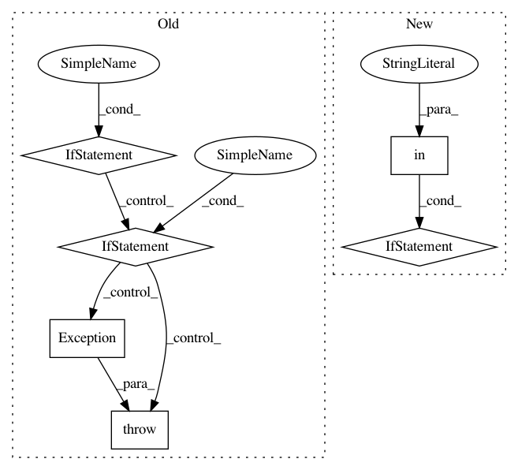

0ac8733a4aa7f6fd9845c2746d9c8346ab794510,google/datalab/contrib/bigquery/operators/_bq_load_operator.py,LoadOperator,execute,#LoadOperator#Any#,42
Before Change
if self._table:
table = bq.Table(self._table, context=None)
if self._mode == "create":
if table.exists():
raise Exception(
"%s already exists; mode should be \"append\" or \"overwrite\"" % self._table)
if not self._schema:
raise Exception(
"%s does not exist, and no schema specified in cell; cannot load." % self._table)
table.create(schema=self._schema)
elif not table.exists():
raise Exception("%s does not exist; mode should be \"create\"" % self._table)
csv_options = bq.CSVOptions(
delimiter=self._csv_options.get("delimiter"), skip_leading_rows=self._csv_options.get("skip"),
allow_jagged_rows=self._csv_options.get("strict"), quote=self._csv_options.get("quote"))
job = table.load(self._path, mode=self._mode,
After Change
kwargs["delimiter"] = self._csv_options["delimiter"]
if "skip" in self._csv_options:
kwargs["skip_leading_rows"] = self._csv_options["skip"]
if "strict" in self._csv_options:
kwargs["allow_jagged_rows"] = self._csv_options["strict"]
if "quote" in self._csv_options:
kwargs["quote"] = self._csv_options["quote"]
csv_options = bq.CSVOptions(**kwargs)
In pattern: SUPERPATTERN
Frequency: 3
Non-data size: 6
Instances
Project Name: googledatalab/pydatalab
Commit Name: 0ac8733a4aa7f6fd9845c2746d9c8346ab794510
Time: 2017-10-27
Author: 4618540+rajivpb@users.noreply.github.com
File Name: google/datalab/contrib/bigquery/operators/_bq_load_operator.py
Class Name: LoadOperator
Method Name: execute
Project Name: dataiku/dataiku-contrib
Commit Name: 6d8b17c9bc792474a2b69d97407163508039ad1d
Time: 2016-01-17
Author: jeremy.greze@dataiku.com
File Name: email-tester-suite/custom-recipes/email-tester-locally/recipe.py
Class Name:
Method Name:
Project Name: apple/coremltools
Commit Name: d1e6e624ef891543c5bba32bb0a696d350714693
Time: 2019-08-20
Author: smq@apple.com
File Name: coremltools/models/utils.py
Class Name:
Method Name: _convert_nn_spec_to_half_precision